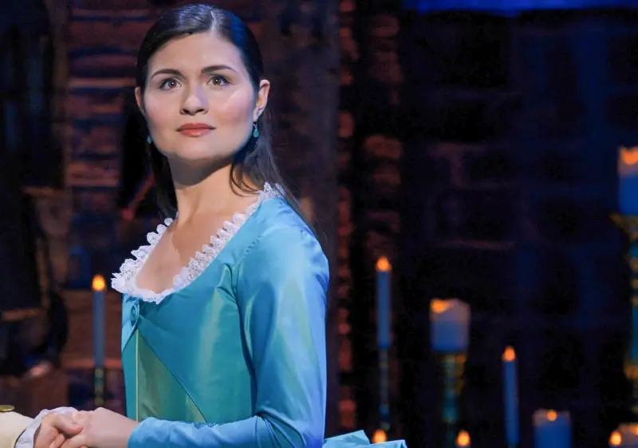

Burr grew up in New Jersey, orphaned at only two years old. His grandfather was a fire and brimstone preacher, and he had a genius mother, and a father who commanded respect. In accordance with their wishes, Burr attended Princeton University at a young age and graduated in two years. Although the American Revolution is driving New York’s citizens to a frenzy, Burr isn’t as enthusiastic as others are about it. He wanted the position of George Washington’s righthand man, but Alexander Hamilton was picked instead. Burr has a legitimate family history to maintain. It seems that many of his actions and hesitations are with this in mind. He is involved with Theodosia, the wife of a British officer. Burr keeps missing opportunities to help design the future of America, as he fears he will fail and destroy the nobility his family earned. Burr believes that if he “waits for it” and join at time when there is less risk, he will achieve success. Burr often watches from a distance rather than actively taking part in things. Despite his hesitant nature and sometimes pompous attitude, Burr is fiercely protective and a hard worker.
Alexander Hamilton
Hamilton grew up in the Caribbean, impoverished and abandoned at age ten by his father. After his mother died, he lived with his cousin, who subsequently committed suicide. Left to fend for himself, he eventually was able to gather enough money from his brilliant writing works and sail to America. With the American Revolution overhanging and conflict beginning to brew. Hamilton befriends and starts to work alongside Aaron Burr, John Laurens, Hercules Mulligan, and Marquis de Lafayette. Hamilton works as Washington’s secretary, or “righthand man.” He accepts the position rather hesitantly, as he dreams of being a higher-ranking soldier in order to be a legacy.
Hamilton is not afraid to put his life on the line if it means that he will die a hero. He married to Elizabeth “Eliza” Schuyler, the second daughter of a wealthy American general. Alexander deeply loves Eliza, but he admires other women as well, including Eliza’s sister Angelica. Desiring to achieve fame and glory as quickly as possible, Hamilton rushes into things, often acting impulsively. Hamilton needs to redefine his definition of “legacy” and sift through his priorities to be able to settle down, which will help him appreciate the smaller things in life. He is witty, fast-paced, and determined. Hamilton refuses to back down from a fight and will do whatever it takes to accomplish his goals. No matter how much he does or how far up the social and political ladder he climbs, he always wants to do more.
Angelica Schuyler
Angelica is the oldest daughter of American general Philip Schuyler. Angelica is expected to maintain her family’s status and marry rich. Angelica is fascinated with the city, often sneaking out of her home with her sisters to see and be a part of the newfound energy taking to the streets. Angelica longs for independence from men. Angelica fixed her sister up with Alexander Hamilton, but now Angelica regrets it. She and Hamilton have so much in common, including chemistry for each other. Angelica cannot help but wonder what might have been.Angelica is a woman of great wit and reason, yet this often causes her to be too analytical. Angelica must be able to put her judgements aside and instead listen to her heart. For if she doesn’t, she could end up hurting more in the process. She is witty, protective, and engaging. Angelica’s intellectual abilities and ideas surpass most others, although her passionate nature can cause her to make the wrong choices.
Eliza Schuyler
Eliza is the second-oldest daughter to Philip Schuyler, a wealthy American general. Alongside sisters Angelica and Peggy, Eliza was raised in Albany, New York, all the while fascinated by the world around her and seeking her own path. Her sister Angelica often pulls her out to the streets of the city for some excitement. While maneuvering through town, Eliza encounters violence along with the novelty of the Revolution, although that doesn’t stop her from enjoying the moment.
While the American Revolution is a time of great change and bloodshed, Eliza prefers to have a stable household, one where all family members are under one roof. This proves to be near impossible, however, as her husband cannot, for the life of him, sit still. She is married to Alexander Hamilton. Eliza prefers to live a reserved life, and while she preaches embracing opportunity, she has difficulty doing so on her own. While Eliza initially wants to be a part of her husband’s “narrative,” she finds it easier to pull herself out of history when things get tough, preferring to disappear rather than be too public about her life. While Eliza is perfectly content with enjoying the small things, she must be willing to not only adapt to changes, but also maintain her role in them.
She is strong, empathetic, and understanding. Eliza always puts others before herself, and because of that, she is well-loved by everyone around her.

Thomas Jefferson
Jefferson grew up in Virginia, raised on a family-run plantation. Jefferson takes great pride in his home state—not only representing Virginia in his career, but also fighting for it to be the Capital of his newly-founded country. He is part of George Washington’s cabinet and Secretary of State. He’s a prominent member of Washington’s advisers. He and his friend James Madison often team up against the other advisors. Jefferson will stop at nothing to get ahead of Hamilton, even if it means exposing him or accusing him of dangerous crimes. He is sharp, highbrow, and sly, with an incredible sense of rhythm. Jefferson can be arrogant at times and get ahead of himself. Still, his passion and dedication to his country make him integral to America’s future.
George Washington
Washington grew up in Virginia, Raised in a wealthy family, Washington eventually inherits Mount Vernon, a large strip of land containing his mansion and plantation. He is a General eventually emerging as America’s first president. During the Revolution, he leads his men through seemingly endless battles full of blood and loss. Washington has learned to take things one step at a time, and as America approaches victory, Washington becomes more integral in its success. He dutifully fights for his country, and he has learned to do so without expecting compensation or glory. He is married to Martha Washington. While he’s a natural leader, he is certainly not perfect and has trouble balancing his civic duty with his daily life. Although Washington is right to learn from his past mistakes, he also needs to put them aside to live life for his own.
He is wise, tough, and empathetic. Washington is the model leader for his country. It is because of him America shifts away from Britain’s monarchical reign and become a democracy. Washington’s passion and sense of civic duty makes him willing to put his people first.